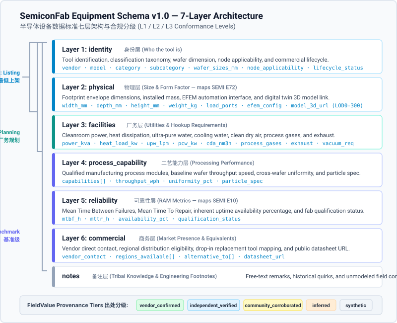

Open, machine-readable semiconductor equipment specification standard with 7-layer architecture and 3 conformance levels. 半导体制造设备开放数据标准 · 七层架构规范、3 级合规验证体系与字段级数据溯源机制。
The SemiconFab Equipment Schema v1.0 is an open, machine-readable data standard designed to describe semiconductor manufacturing tools across front-end wafer fabrication and back-end packaging. It establishes a structured specification format for equipment manufacturers, fab planners, industrial engineering teams, and academic researchers to catalog physical footprints, utility hookups, process capabilities, and reliability metrics without exposing proprietary process recipes or confidential pricing.
SemiconFab 设备数据标准 v1.0 是一个开放、机器可读的数据交换规范，旨在统一描述半导体前道晶圆制造与后道封装测试的各类制造设备。本标准为半导体设备制造商、晶圆厂规划工程师、工业工程团队以及学术研究人员建立了一套结构化的数据描述体系，用于收录设备物理占地、厂务二次配管配线需求、工艺能力及设备可靠性指标，同时严格避开厂商专有工艺配方与商业机密价格。
The semiconductor equipment industry currently relies on fragmented, unstructured documentation that hinders transparent technical evaluation:
半导体设备行业长期依赖离散、非结构化的技术文档，制约了客观、透明的技术评估与产线规划：
The schema organizes equipment attributes into seven modular, decoupled layers, ensuring that records can be populated progressively as data becomes available:
本规范将设备属性解耦划分为七个独立的模块化数据层，确保记录可随着工程数据的逐步完备而逐层递进补充：
| Layer Key层标识 | Layer Name层名称 | Scope & Description定义与范围 | Example Fields核心代表字段 |
|---|---|---|---|
identity |
Identity Layer身份层 | Canonical equipment identification, classification taxonomy, wafer size applicability, node target, and manufacturing status. 设备基础身份核验、大类归属、适用晶圆尺寸、适用制程节点及在产状态。 |
vendor, model,
category, wafer_sizes_mm,
node_applicability
|
physical |
Physical Layer物理层 | Structural envelope dimensions, installed mass, automation interface configurations, and 3D digital twin geometry assets (aligned with SEMI E72). 设备外形几何包络尺寸、整机安装重量、晶圆搬送自动化端口及三维模型（对标 SEMI E72）。 |
width_mm, depth_mm,
height_mm, weight_kg,
load_ports, model_3d_url
|
facilities |
Facilities Layer厂务层 | Utility consumptions and hookup requirements, including electrical power, cooling water, ultra-pure water, process gases, and cleanroom exhaust. 洁净室二次配管配线需求，包括动力供电、工艺冷却水、超纯水、干式压缩空气、特气消耗及酸碱排气。 |
power_kva, heat_load_kw,
upw_lpm, cda_nm3h,
process_gases, exhaust
|
process_capability |
Process Capability Layer工艺能力层 | Qualified process modules, baseline wafer processing throughput, across-wafer thickness/etch uniformity, and defectivity limits. 设备支持的合格工艺模块清单、参考工艺条件下的晶圆产出速率、晶圆内均匀度指标及微粒缺陷控制标准。 |
capabilities, throughput_wph,
uniformity_pct, particle_spec
|
reliability |
Reliability Layer可靠性层 | Standard equipment reliability, maintainability, and operational availability metrics, mapped directly to SEMI E10 definitions. 运行可靠性、可维修性及设备本征开机率指标，严格对标 SEMI E10 RAM 状态定义及量产验证状态。 |
mtbf_h, mttr_h,
availability_pct,
qualification_status
|
commercial |
Commercial Layer商务层 | Public vendor contact points, regional service eligibility, direct drop-in replacement tool references, and public datasheet links. 厂商公开联系渠道、销售与技术服务区域、同口径直接替代型号对照关系及公开数据手册来源链接。 |
vendor_contact, regions_available,
alternative_to, datasheet_url
|
notes |
Notes Layer备注层 | Unstructured engineering remarks, equipment maintenance notes, and field operational observations excluded from automated comparisons. 自由文本工程备注、维护注意事项及现场运行经验总结（不参与自动化机器横向参数比对）。 | Free-text string自由文本字符串 |
To lower the barrier to entry while maintaining rigorous standards for advanced industrial engineering, records are certified across three conformance levels matching SPEC.md §7:
为降低数据提交门槛，同时保障工业工程严谨性，规范设立了三个向后兼容的合规分级（严格对标 SPEC.md §7）：
L1)第一级 — 最低上架级 (L1):
meta + identity +
physical.meta + identity +
physical。
needs_footprint pipeline awaiting physical
dimensions.
needs_footprint）中等待尺寸补充。
L2)第二级 — 厂务规划级 (L2):
L1 requirements + facilities.L1 全部要求 + facilities。
L3)第三级 — 完整基准级 (L3):
L2 requirements +
process_capability + reliability +
commercial.L2 全部要求 + process_capability +
reliability + commercial。
Trust in the SemiconFab catalog is established at the field level
rather than the record level. Every quantitative and qualitative value
is wrapped in a FieldValue object carrying an explicit
provenance tier from SPEC.md §5:
SemiconFab
目录的信任建立在字段级而非整条记录级。每个数值或枚举值均被封装在
FieldValue
对象中，携带规范定义的五个出处等级之一（严格对标 SPEC.md §5）：
vendor_confirmed
(Vendor Published)(厂商公开确认):
Data explicitly published in the equipment manufacturer's public
datasheet, official technical manual, or attested by an authorized
vendor representative. Example: equipment dimensions directly
transcribed from an official brochure published on the vendor's
primary domain (width_mm = 3200).
由设备制造商在公开产品规格书、官方技术手册中明确公布，或经厂商认证代表正式提交。例如：设备宽度直接录自厂商官网公开
PDF（width_mm = 3200）。
independent_verified
(Independent Verified)(独立验证):
Data verified through independent third-party testing, certified
fab installation inspection, academic literature, or accredited
laboratory test reports. Example: cleanroom acoustic noise
verified by an ISO/IEC 17025 accredited metrology lab report
(noise_db = 68.5).
经过独立第三方机构测试、晶圆厂装机现场验收单、经同行评审学术论文或认证实验室检测报告验证。例如：设备运行噪声经检测机构实测标定（noise_db = 68.5）。
community_corroborated
(Community Corroborated)(社区交叉确认):
Data confirmed independently by two or more unrelated fab
engineers, facility technicians, or research institutions without
an official public datasheet. Example: ultra-pure water flow rate
corroborated by facility logs from two independent semiconductor
fabrication lines (upw_lpm = 18.0).
缺乏原厂公开手册时，由至少两家无关联关系的晶圆厂运行团队、厂务技工或科研机构独立提供并相互交叉印证的数据。例如：超纯水流量经两座工厂运行记录印证（upw_lpm = 18.0）。
inferred
(Engineering Inferred)(工程推断):
Engineering estimates calculated from scale references, related
tool family architectures, physical scaling laws, or facility
boundary equations. Example: machine depth estimated by pixel
scale calibration against standard 300mm FOUP load port dimensions
from cleanroom photographs (depth_mm = 2450).
基于同系前代设备结构、标准物理放缩定律、现场照片比例尺标定或厂务外推模型估算的工程推断值。例如：通过晶圆装载端口（FOUP）标准物理尺寸在照片中的像素比例推算机身深度（depth_mm = 2450）。
synthetic
(Synthetic Placeholder)(合成占位):
Numerically plausible placeholder values generated for digital
twin simulation pipelines, stress testing, or mock demonstrators.
Example: Mean Time To Repair populated with a standard default
value to enable discrete-event queuing simulation prior to
production data collection (mttr_h = 8.0).
为离散事件仿真运行、数据校验器压力测试或原型展示系统填充的数值合理占位符。例如：在真实量产统计收敛前，填入合理的行业均值以跑通排队仿真算法（mttr_h = 8.0）。

Figure 1: The seven-layer modular stack of the SemiconFab Equipment Schema v1.0, showing conformance level boundaries (L1/L2/L3) and FieldValue provenance tiers.
图 1：SemiconFab 设备数据标准 v1.0 七层模块化架构堆栈、L1/L2/L3 合规等级边界及底层的 FieldValue 出处分级体系。
Access the canonical specification documents, validation tools, and submission interfaces below:
您可以通过以下公开链接下载规范文档、调用校验工具或提交新设备规格：
/schema.json
/data-standard.md
verification.html
/add-equipment.html